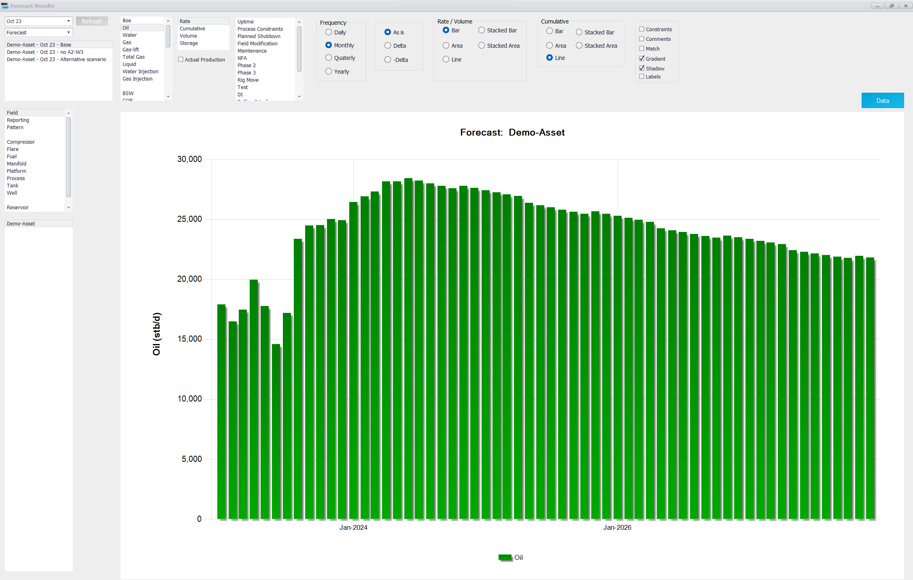
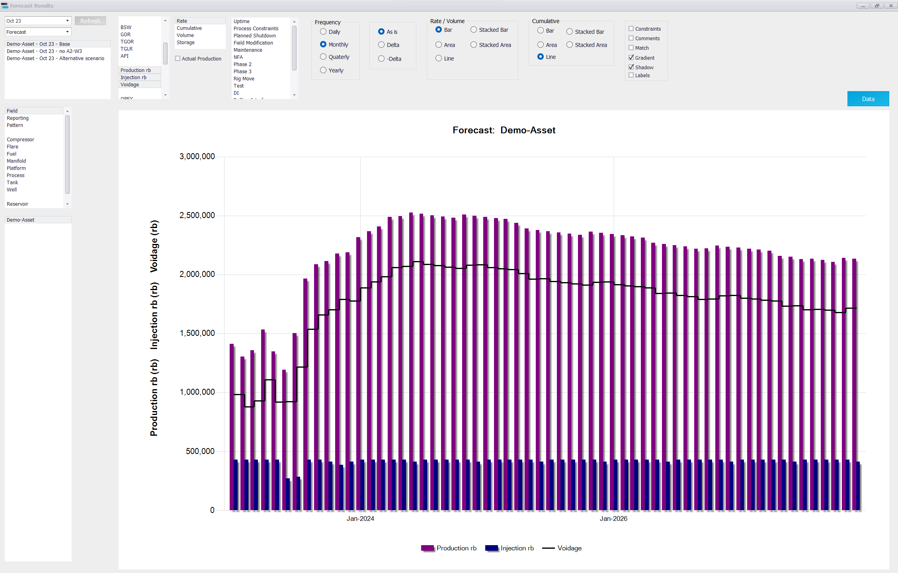
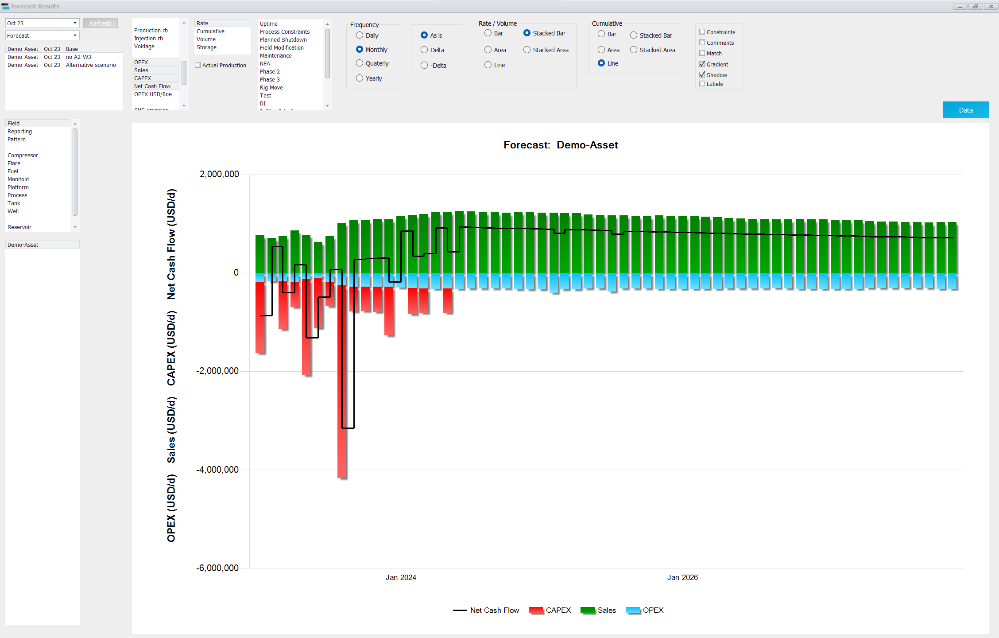
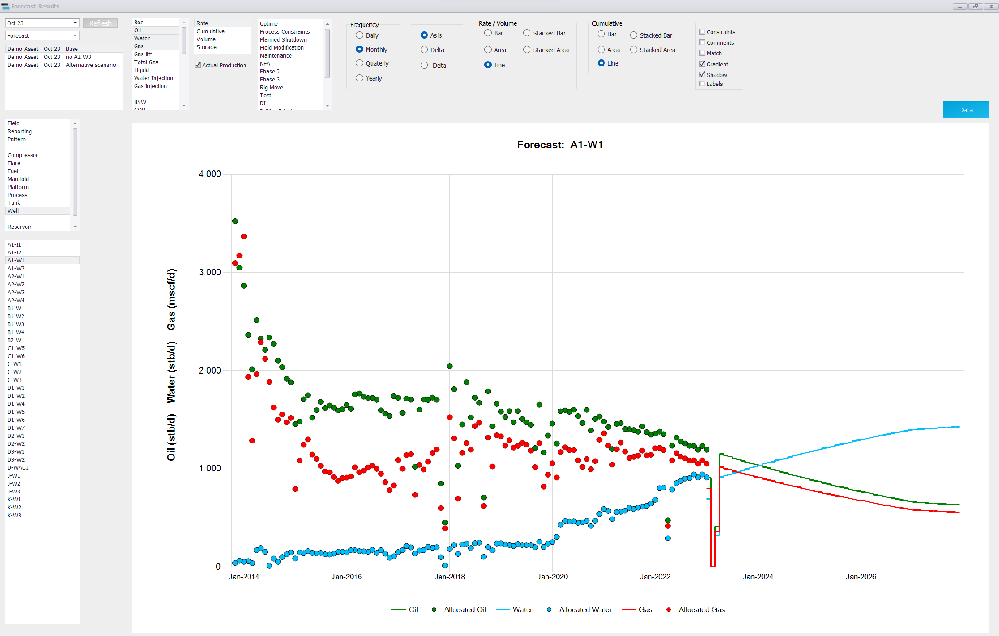
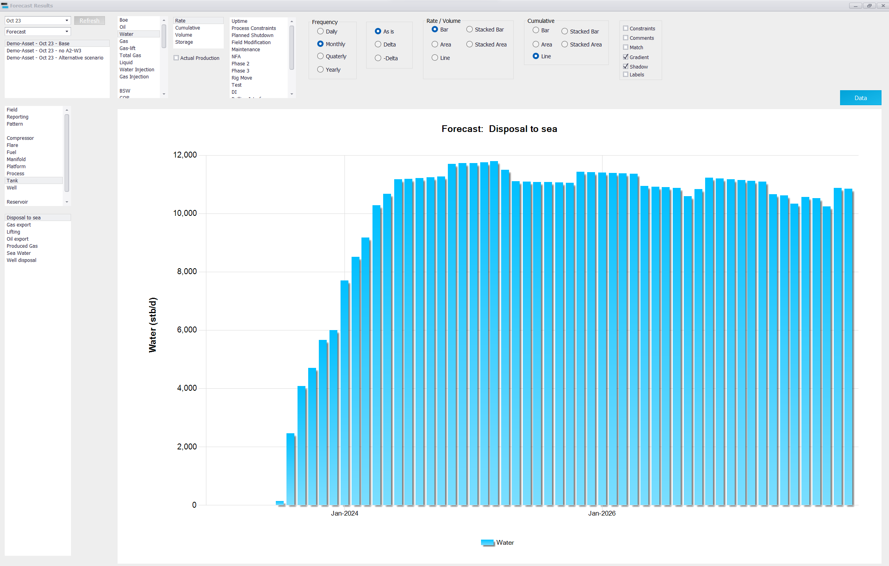
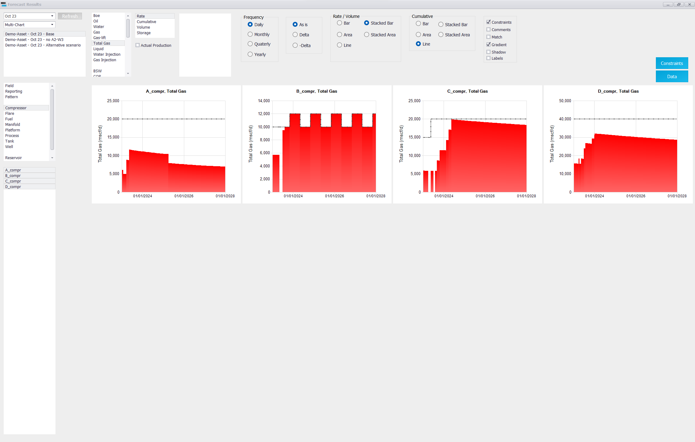

|
|
Forecast results: Charts
1. Opening the Forecast Results window
Select the project and scenario in the main window, then click "Charts" in the "Forecast Results" group of the ribbon. The "Forecast Results" window opens. Most charts can be built here, without exporting to Excel. (Precept AI can also plot a result on request, e.g. "plot the field oil rate, monthly, for the base and alternative scenarios".)

2. Building a chart
Work from left to right. The chart updates after each selection; Ctrl+click selects several items in a list.
1.Project and mode (top left). The mode list offers "Forecast" (normal charts), "Opportunity Gain" (section 5) and "Multi-Chart" (section 3). Next to it, choose "Deterministic" or "Probabilistic" (section 4). "Refresh" reloads the lists.
2.Scenarios. Select one scenario, or several to compare them on the same chart.
3.Node type. "Field", "Reporting", "Pattern", the node types of the network (Manifold, Compressor, Well…), "Reservoir", "Project" (results grouped by project) and "All". "Economics Reporting" appears when economics are calculated.
4.Node. Select the node(s) in the list below. For wells, the lists "All Well Types" (Producer, Water Injector, Gas Injector) and "All Reservoirs" filter the list.
5.Parameter (table below).
6."Rate", "Cumulative", "Volume" or "Decline rate (%)".
7."Frequency": "Daily", "Monthly", "Quaterly" or "Yearly".
8."As is", or "Delta" / "-Delta" to plot the difference between two selected scenarios (first minus second, or the reverse).
9.Chart type, in "Rate / Volume" and in "Cumulative": "Bar", "Area", "Line", "Stacked Bar", "Stacked Area".
|
Group
|
Parameters
|
|
Streams
|
Boe, Oil, Water, Gas, Gas-lift, Total Gas, Liquid, Water Injection, Gas Injection (Condensate and LPG on assets that have them)
|
|
Ratios
|
BSW, GOR, TGOR, TGLR, API
|
|
Voidage and recovery
|
Production rb, Injection rb, Voidage, VRR, Oil Recovery factor, Gas Recovery factor
|
|
Well counts
|
O&G Prod count, WI count, GI count, Exploration count, Appraisal count
|
|
Pressures and temperatures
|
Wells: FP, dP Choke, THP, BHP, Reservoir Pressure, Drawdown, Temperature. Nodes and pipes: Pressure, Temperature, upstream / downstream or inlet / outlet pressures and temperatures. Shown when the forecast computes them (Material Balance, Simulation, or a pressure post-processor). All pressures are gauge, in the asset's pressure unit.
|
|
Economics
|
OPEX, CAPEX, Sales, Net Cash Flow, OPEX USD/Boe — when "Calculate Economics" is ticked in Settings
|
|
GHG
|
GHG emission, GHG intensity, GHG from Fuel, GHG from Flare, GHG from Vent — when "GHG emission" is ticked in Settings
|
2.1 Shortfalls
When "Calculate future losses" is ticked in Settings, a deterministic forecast of the field or of a well also shows the list of loss categories: "Uptime", "Process Constraints" and one entry per shutdown project. Select categories to stack the lost production on top of the forecast. See Forecast calculations for how each loss is computed.
2.2 Options and buttons
•"Allocated Production" — adds the measured (allocated) history to the chart. "Match" then shows how close the forecast is to the history, as a percentage.
•"Constraints" — draws the node's constraint (capacity) on the chart, as a dashed line.
•"Comments" — shows the forecast events (opportunity start / end, conversions, constraint changes) on the chart.
•"Gradient", "Shadow", "Labels" — chart styling. Right-click a point of a series to change that series' style.
•"Forecast Data" — the table of the values plotted. "Historical Data" — the table of the allocated history.
•"Actual vs Forecast" — per well, allocated oil vs forecast oil and their difference: which wells over- or under-perform.
•Double right-click on a chart to copy it to the clipboard.
Example: field oil production, bar chart, monthly data
Node type "Field", parameter "Oil", "Rate", "Monthly", "Bar" (figure above).
Example: field voidage, bar chart, monthly data

Example: field economics, stacked bar chart, monthly data

Example: well production with allocated data, line chart, monthly data

Example: water disposal to sea, bar chart, monthly data

3. Multi-Chart
Choose "Multi-Chart" in the mode list to draw one small chart per selected node, side by side — for example the total gas of every compressor. Tick "Constraints" to show each node's capacity. The "Constraints" button shows the scenario's constraints themselves.

4. Probabilistic results
After a probabilistic run (see Probabilistic forecast), choose "Probabilistic" instead of "Deterministic". The runs of the scenario are listed and all selected by default. For the field or a well:
•every run is drawn; with 10 runs or more, each is shaded by its rank in cumulative oil (strongest at the median);
•for Oil or Gas, the Low, Mid and High runs are highlighted. They are the runs ranked at 10 %, 50 % and 90 % by cumulative oil at the end of the forecast (Low ≈ P90, Mid ≈ P50, High ≈ P10);
•the "Probabilistic" window opens with the cumulative oil and gas of every run against probability, the Low / Mid / High values and the list of runs. At field level, "Generate Low Mid High cases" creates the scenarios "<scenario> - Low", "- Mid" and "- High" from these three runs.
5. Opportunity gain
After running "Gain per opportunity" (see Forecast results, section 4), choose "Opportunity Gain" in the mode list. The chart shows the gain of each opportunity — the baseline forecast minus the forecast without that opportunity. Tick "Tornado" to compare the opportunities on one chart: the gain of each in field cumulative oil or gas at the end of the forecast, or in NPV ("NPV 5", "NPV 10", "NPV 15", "NPV 20") when economics are calculated.
|
|